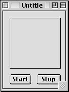
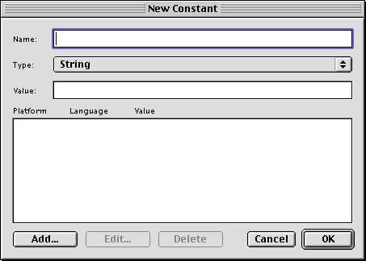
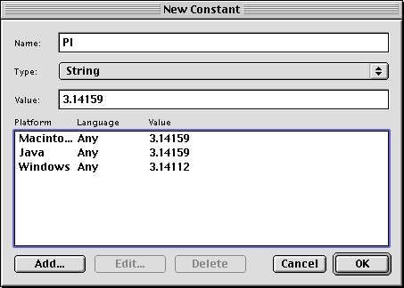

Tips
This month's installment of tips follows more of a "how to use undocumented DR2 features" approach. Darned useful, and I hope you like it!
Tip #1—Use Control Binding
One of the coolest new features of the DR2 releases has been control binding. This feature, which is available in DR2r24 and up, has been simplifying my life quite a bit, and it should simplify your's too!
The idea behind control binding is that in many programs, clicking on a button, or selecting an item in a list affects the appearance of another control. For example, clicking the a button might start playing a movie, and clicking stop might (logically enough), stop it.
 Normally, this would involve writing some code—a whopping one line for each button. However, as lazy developers, this is simply too much! Control binding aims to simplify this oh-so-complex process.
First off, we'll need to create three controls: One MoviePlayer, and two PushButtons, so that your project looks something like the picture to the left.
This setup is fairly simple. If you've had any experience with the movieplayer control, then you probably know how you could implement this. Open the code editor, and put MoviePlayer1.Start in the Start button's Action event, and MoviePlayer1.Stop in the Stop button's Action event. However, I have a far more interesting way of doing this: one that doesn't even involve opening the code editor!
First off, select the Start button. Next, hold down the Command and Shift keys, and drag it onto the MoviePlayer control. A line will appear, and the movieplayer will be hilighted with a blue border. Let go of the mouse button. This dialog will (hopefully) appear:
 Since
we want the first button to play the movie, select the first option in the list.
Since
we want the first button to play the movie, select the first option in the list.
Next, do the exact same things for the stop button, except make it stop the movie. When you choose OK, your window should like like the picture to the right. If you drag a movie into the project, and set the movieplayer's Movie property (in the properties window) to that movie, then you've got a complete project.
Simple, huh? And you didn't need to type a single line of code!
Personally, I think this is an extremely exciting addition. As more
and more bindings are made possible, this feature will become more and more useful.
Not only will it make life easier for beginners (at that point, the less code, the
better), but it'll make life much simpler for everyone. Now if there were only a
way to delete a binding...
Tip #2—Use Constants
A great new feature that many people have been asking for has finally arrived: Constants. Constants are normally variables with a preset value. For example, in Visual Basic, you'd define a constant by typing in Global Const PI=3.14159. This would add a variable called PI that could be accessed from anywhere.
RB's version of this feature is more complicated, but much more powerful. In this example, I'll show you how to use it to set the value of PI based on the type of computer that the program is being run on. For Macs and Java machines, PI will be 3.14159 (the right number). For Windows, the value will be 3.14112. (Much thanks to the mailing list for this devious idea!)
First of all, we'll want to make a module. Constants can only exist in modules, even though there's a "constants" section in classes too.
Open up the module, and choose "New Constant..." from the Edit menu. You should see a screen that looks something like this:

As you can see, it's much more complicated than simply typing a value for a variable!
First of all, type in "PI" in the name field. In the value field, type 3.14159. You must give constants a value, or RB won't recognize them.
Now comes the fun part! Click the "Add..." button in the lower left corner. The following dialog will appear:

From the platform menu, select "Macintosh". Then, type in 3.14159 in the Value field. Finally, click OK to add the type. You'll want to do this for Java too.
Finally, add another constant, and select Windows from the platform menu. In the Value field, type 3.14112. Click OK. Your Constants window should look like this:

After you click OK, your constant has been added. From now on, you can use it like a normal variable with the name PI throughout your code. However, there's also a special way to use constants. On a PushButton, make the caption a number sign (#) followed by the constant's name. The button caption will automatically become whatever value that constant is!